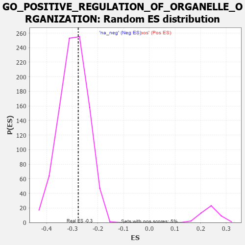

| | | Dataset | 7d |
| Phenotype | NoPhenotypeAvailable |
| Upregulated in class | na_neg |
| GeneSet | GO_POSITIVE_REGULATION_OF_ORGANELLE_ORGANIZATION |
| Enrichment Score (ES) | -0.27679735 |
| Normalized Enrichment Score (NES) | -0.934914 |
| Nominal p-value | 0.6144958 |
| FDR q-value | 0.9185136 |
| FWER p-Value | 1.0 |
Table: GSEA Results Summary
 Fig 1: Enrichment plot: GO_POSITIVE_REGULATION_OF_ORGANELLE_ORGANIZATION
Fig 1: Enrichment plot: GO_POSITIVE_REGULATION_OF_ORGANELLE_ORGANIZATION
Profile of the Running ES Score & Positions of GeneSet Members on the Rank Ordered List
| PROBE | GENE SYMBOL | GENE_TITLE | RANK IN GENE LIST | RANK METRIC SCORE | RUNNING ES | CORE ENRICHMENT | | 1 | TGFB3 | | | 49 | 2.654 | 0.0241 | No |
| 2 | RAC2 | | | 60 | 2.442 | 0.0508 | No |
| 3 | RHOU | | | 210 | 1.031 | 0.0435 | No |
| 4 | ULK1 | | | 272 | 0.875 | 0.0457 | No |
| 5 | FSCN1 | | | 297 | 0.830 | 0.0522 | No |
| 6 | GSK3A | | | 351 | 0.745 | 0.0539 | No |
| 7 | TAPT1 | | | 354 | 0.743 | 0.0622 | No |
| 8 | BAX | | | 387 | 0.711 | 0.0662 | No |
| 9 | NBN | | | 405 | 0.696 | 0.0720 | No |
| 10 | EED | | | 409 | 0.690 | 0.0795 | No |
| 11 | ERCC1 | | | 453 | 0.660 | 0.0816 | No |
| 12 | CNOT6 | | | 462 | 0.655 | 0.0881 | No |
| 13 | CNOT2 | | | 514 | 0.625 | 0.0887 | No |
| 14 | HTRA2 | | | 527 | 0.621 | 0.0942 | No |
| 15 | CCNB1 | | | 581 | 0.601 | 0.0943 | No |
| 16 | PARN | | | 660 | 0.572 | 0.0909 | No |
| 17 | MRE11 | | | 693 | 0.560 | 0.0932 | No |
| 18 | ID1 | | | 719 | 0.555 | 0.0964 | No |
| 19 | WDR61 | | | 734 | 0.549 | 0.1009 | No |
| 20 | RAD21 | | | 779 | 0.538 | 0.1014 | No |
| 21 | CTR9 | | | 964 | 0.492 | 0.0834 | No |
| 22 | SRC | | | 1128 | 0.459 | 0.0678 | No |
| 23 | KMT2A | | | 1130 | 0.458 | 0.0729 | No |
| 24 | NCK2 | | | 1131 | 0.458 | 0.0781 | No |
| 25 | UBL5 | | | 1162 | 0.452 | 0.0795 | No |
| 26 | TFDP1 | | | 1180 | 0.450 | 0.0824 | No |
| 27 | KAT7 | | | 1240 | 0.440 | 0.0799 | No |
| 28 | DKC1 | | | 1292 | 0.431 | 0.0783 | No |
| 29 | DDHD2 | | | 1557 | 0.381 | 0.0488 | No |
| 30 | CDC27 | | | 1585 | 0.377 | 0.0497 | No |
| 31 | PAF1 | | | 1588 | 0.376 | 0.0537 | No |
| 32 | DRG1 | | | 1633 | 0.368 | 0.0523 | No |
| 33 | KMT2E | | | 1730 | 0.350 | 0.0440 | No |
| 34 | ESPL1 | | | 1734 | 0.349 | 0.0476 | No |
| 35 | LRP5 | | | 1769 | 0.342 | 0.0472 | No |
| 36 | FMR1 | | | 1816 | 0.334 | 0.0451 | No |
| 37 | UVRAG | | | 1831 | 0.332 | 0.0471 | No |
| 38 | RTF1 | | | 1844 | 0.329 | 0.0493 | No |
| 39 | SMAD4 | | | 1860 | 0.326 | 0.0511 | No |
| 40 | NUP62 | | | 1871 | 0.324 | 0.0536 | No |
| 41 | CUL3 | | | 1893 | 0.321 | 0.0545 | No |
| 42 | TASOR | | | 1931 | 0.316 | 0.0534 | No |
| 43 | SART3 | | | 2084 | 0.293 | 0.0373 | No |
| 44 | MORC2 | | | 2171 | 0.281 | 0.0295 | No |
| 45 | C2CD5 | | | 2204 | 0.276 | 0.0285 | No |
| 46 | NSD3 | | | 2279 | 0.263 | 0.0220 | No |
| 47 | WASF1 | | | 2303 | 0.259 | 0.0221 | No |
| 48 | BCAS3 | | | 2352 | 0.253 | 0.0188 | No |
| 49 | SIN3A | | | 2361 | 0.251 | 0.0207 | No |
| 50 | SAE1 | | | 2390 | 0.247 | 0.0199 | No |
| 51 | MET | | | 2430 | 0.240 | 0.0176 | No |
| 52 | FEN1 | | | 2446 | 0.237 | 0.0184 | No |
| 53 | KDM1A | | | 2447 | 0.237 | 0.0211 | No |
| 54 | CDT1 | | | 2505 | 0.226 | 0.0164 | No |
| 55 | HUWE1 | | | 2506 | 0.225 | 0.0190 | No |
| 56 | PHB2 | | | 2712 | 0.197 | -0.0050 | No |
| 57 | LMAN1 | | | 2743 | 0.192 | -0.0067 | No |
| 58 | ATR | | | 2800 | 0.183 | -0.0118 | No |
| 59 | FER | | | 2803 | 0.183 | -0.0099 | No |
| 60 | BRK1 | | | 2805 | 0.183 | -0.0080 | No |
| 61 | BECN1 | | | 2828 | 0.179 | -0.0087 | No |
| 62 | PDCD5 | | | 2885 | 0.169 | -0.0140 | No |
| 63 | WDR5 | | | 2892 | 0.168 | -0.0128 | No |
| 64 | RTEL1 | | | 3010 | 0.148 | -0.0261 | No |
| 65 | BRD7 | | | 3018 | 0.147 | -0.0254 | No |
| 66 | WNT4 | | | 3023 | 0.146 | -0.0242 | No |
| 67 | PAN3 | | | 3054 | 0.142 | -0.0264 | No |
| 68 | SMAD3 | | | 3303 | 0.105 | -0.0570 | No |
| 69 | FMN1 | | | 3363 | 0.095 | -0.0635 | No |
| 70 | GMFB | | | 3381 | 0.091 | -0.0646 | No |
| 71 | CNOT1 | | | 3473 | 0.081 | -0.0754 | No |
| 72 | CDK5 | | | 3480 | 0.080 | -0.0752 | No |
| 73 | FES | | | 3501 | 0.077 | -0.0769 | No |
| 74 | DMRT1 | | | 3546 | 0.068 | -0.0818 | No |
| 75 | MAPK3 | | | 3589 | 0.062 | -0.0864 | No |
| 76 | FIS1 | | | 3654 | 0.051 | -0.0941 | No |
| 77 | CDC16 | | | 3724 | 0.038 | -0.1025 | No |
| 78 | SPAST | | | 3801 | 0.027 | -0.1119 | No |
| 79 | NEK2 | | | 3871 | 0.016 | -0.1206 | No |
| 80 | NIPBL | | | 3900 | 0.010 | -0.1241 | No |
| 81 | STX18 | | | 3962 | 0.000 | -0.1319 | No |
| 82 | VPS35 | | | 3989 | -0.006 | -0.1352 | No |
| 83 | TAL1 | | | 4064 | -0.018 | -0.1444 | No |
| 84 | MTOR | | | 4114 | -0.025 | -0.1505 | No |
| 85 | ABL1 | | | 4125 | -0.027 | -0.1514 | No |
| 86 | SYNJ1 | | | 4173 | -0.038 | -0.1570 | No |
| 87 | VPS11 | | | 4202 | -0.041 | -0.1601 | No |
| 88 | ARPC2 | | | 4232 | -0.047 | -0.1633 | No |
| 89 | ARL2 | | | 4254 | -0.050 | -0.1654 | No |
| 90 | WNT11 | | | 4282 | -0.056 | -0.1683 | No |
| 91 | BAG4 | | | 4314 | -0.061 | -0.1715 | No |
| 92 | CTBP1 | | | 4323 | -0.064 | -0.1718 | No |
| 93 | OPA1 | | | 4330 | -0.065 | -0.1718 | No |
| 94 | ADRB2 | | | 4352 | -0.068 | -0.1738 | No |
| 95 | CDC37 | | | 4446 | -0.084 | -0.1847 | No |
| 96 | LRRK2 | | | 4467 | -0.087 | -0.1863 | No |
| 97 | SNW1 | | | 4514 | -0.096 | -0.1911 | No |
| 98 | ABI2 | | | 4554 | -0.106 | -0.1949 | No |
| 99 | PNKP | | | 4572 | -0.111 | -0.1958 | No |
| 100 | GATA3 | | | 4614 | -0.120 | -0.1997 | No |
| 101 | ARPC3 | | | 4659 | -0.129 | -0.2038 | No |
| 102 | LIMK1 | | | 4684 | -0.136 | -0.2053 | No |
| 103 | ARF6 | | | 4704 | -0.140 | -0.2062 | No |
| 104 | WASF3 | | | 4730 | -0.145 | -0.2077 | No |
| 105 | POC1A | | | 4768 | -0.151 | -0.2107 | No |
| 106 | WBP2 | | | 4780 | -0.153 | -0.2104 | No |
| 107 | PLD6 | | | 4799 | -0.157 | -0.2109 | No |
| 108 | FBXW7 | | | 4816 | -0.161 | -0.2111 | No |
| 109 | WDR1 | | | 4824 | -0.163 | -0.2101 | No |
| 110 | DLG1 | | | 4860 | -0.169 | -0.2127 | No |
| 111 | ATRX | | | 4929 | -0.184 | -0.2193 | No |
| 112 | XRCC5 | | | 4946 | -0.187 | -0.2192 | No |
| 113 | ADCK1 | | | 4953 | -0.188 | -0.2178 | No |
| 114 | DDX11 | | | 5102 | -0.225 | -0.2342 | No |
| 115 | MMP9 | | | 5108 | -0.227 | -0.2323 | No |
| 116 | DOC2B | | | 5113 | -0.229 | -0.2302 | No |
| 117 | HDAC6 | | | 5183 | -0.244 | -0.2362 | No |
| 118 | ATM | | | 5210 | -0.249 | -0.2367 | No |
| 119 | GPSM2 | | | 5228 | -0.252 | -0.2360 | No |
| 120 | TNKS2 | | | 5239 | -0.254 | -0.2343 | No |
| 121 | PICK1 | | | 5265 | -0.263 | -0.2345 | No |
| 122 | RAD50 | | | 5314 | -0.276 | -0.2375 | No |
| 123 | EPHA1 | | | 5349 | -0.285 | -0.2386 | No |
| 124 | FZD5 | | | 5386 | -0.292 | -0.2399 | No |
| 125 | PLK4 | | | 5397 | -0.295 | -0.2378 | No |
| 126 | SPHK1 | | | 5576 | -0.339 | -0.2567 | No |
| 127 | GNL3 | | | 5614 | -0.349 | -0.2575 | No |
| 128 | CASP8 | | | 5678 | -0.369 | -0.2613 | No |
| 129 | CDC23 | | | 5756 | -0.394 | -0.2667 | No |
| 130 | BBS4 | | | 5806 | -0.407 | -0.2683 | No |
| 131 | PAN2 | | | 5807 | -0.408 | -0.2636 | No |
| 132 | ARPC4 | | | 5886 | -0.430 | -0.2687 | No |
| 133 | DCTN1 | | | 5950 | -0.454 | -0.2716 | Yes |
| 134 | SURF4 | | | 5951 | -0.455 | -0.2664 | Yes |
| 135 | ACTN2 | | | 5960 | -0.458 | -0.2622 | Yes |
| 136 | SH2B1 | | | 5963 | -0.459 | -0.2572 | Yes |
| 137 | CENPJ | | | 5968 | -0.460 | -0.2524 | Yes |
| 138 | SYT9 | | | 5992 | -0.469 | -0.2500 | Yes |
| 139 | JMY | | | 6023 | -0.479 | -0.2483 | Yes |
| 140 | CKAP5 | | | 6032 | -0.482 | -0.2438 | Yes |
| 141 | RAC1 | | | 6036 | -0.484 | -0.2387 | Yes |
| 142 | EVL | | | 6052 | -0.490 | -0.2350 | Yes |
| 143 | ATG13 | | | 6110 | -0.508 | -0.2365 | Yes |
| 144 | TNKS | | | 6138 | -0.516 | -0.2340 | Yes |
| 145 | INSR | | | 6204 | -0.538 | -0.2362 | Yes |
| 146 | TPM1 | | | 6226 | -0.545 | -0.2326 | Yes |
| 147 | CDC42 | | | 6236 | -0.548 | -0.2275 | Yes |
| 148 | RALB | | | 6399 | -0.617 | -0.2412 | Yes |
| 149 | UBE2N | | | 6407 | -0.621 | -0.2350 | Yes |
| 150 | TRPV4 | | | 6515 | -0.668 | -0.2410 | Yes |
| 151 | ARF1 | | | 6583 | -0.701 | -0.2416 | Yes |
| 152 | TPR | | | 6597 | -0.709 | -0.2352 | Yes |
| 153 | ATL3 | | | 6619 | -0.723 | -0.2296 | Yes |
| 154 | CLIP1 | | | 6667 | -0.746 | -0.2270 | Yes |
| 155 | PAK1 | | | 6691 | -0.757 | -0.2213 | Yes |
| 156 | GSK3B | | | 6719 | -0.768 | -0.2160 | Yes |
| 157 | DNM1L | | | 6963 | -0.913 | -0.2367 | Yes |
| 158 | DZIP1 | | | 7009 | -0.940 | -0.2317 | Yes |
| 159 | SYT1 | | | 7148 | -1.033 | -0.2375 | Yes |
| 160 | MFN2 | | | 7208 | -1.081 | -0.2327 | Yes |
| 161 | CDK9 | | | 7266 | -1.138 | -0.2270 | Yes |
| 162 | MSX2 | | | 7299 | -1.171 | -0.2177 | Yes |
| 163 | GRN | | | 7319 | -1.194 | -0.2064 | Yes |
| 164 | WDR35 | | | 7357 | -1.225 | -0.1971 | Yes |
| 165 | NEK7 | | | 7415 | -1.285 | -0.1897 | Yes |
| 166 | DDHD1 | | | 7501 | -1.397 | -0.1846 | Yes |
| 167 | SAXO1 | | | 7592 | -1.543 | -0.1785 | Yes |
| 168 | CROCC | | | 7639 | -1.628 | -0.1657 | Yes |
| 169 | MNS1 | | | 7642 | -1.633 | -0.1472 | Yes |
| 170 | MCU | | | 7644 | -1.637 | -0.1286 | Yes |
| 171 | BOK | | | 7715 | -1.817 | -0.1168 | Yes |
| 172 | RNF31 | | | 7744 | -1.895 | -0.0987 | Yes |
| 173 | ANK1 | | | 7815 | -2.146 | -0.0830 | Yes |
| 174 | CAV3 | | | 7896 | -2.739 | -0.0619 | Yes |
| 175 | PLCB1 | | | 7904 | -2.841 | -0.0302 | Yes |
| 176 | ARRB1 | | | 7935 | -3.377 | 0.0046 | Yes |
Table: GSEA details [plain text format]

Fig 2: GO_POSITIVE_REGULATION_OF_ORGANELLE_ORGANIZATION: Random ES distribution
Gene set null distribution of ES for GO_POSITIVE_REGULATION_OF_ORGANELLE_ORGANIZATION